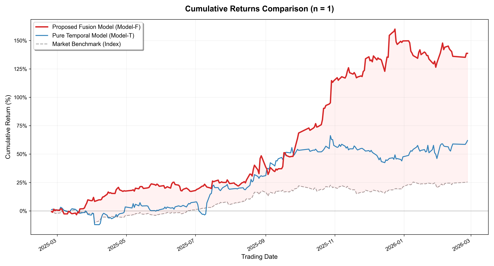
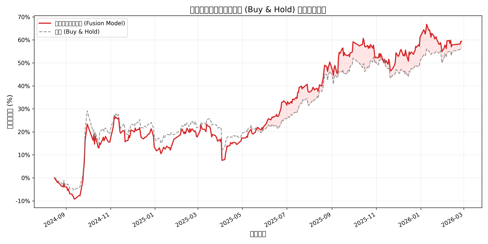
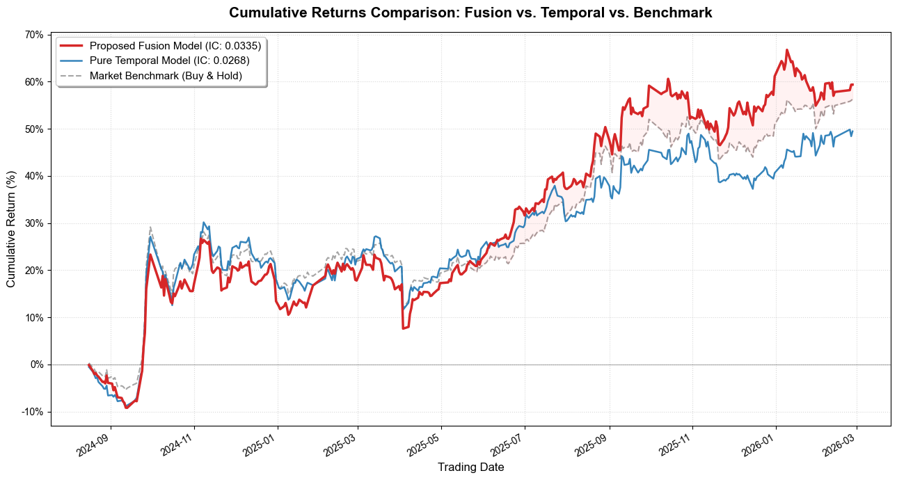

Mixed-Frequency Deep Learning for Cross-Sectional Stock Prediction
Do financial statements still add alpha beyond price and volume? An empirical study on CSI 300 constituents.
- Built a mixed-frequency deep learning pipeline combining quarterly financial statement data (MLP branch) with daily price/volume data (CNN-LSTM branch), fused by a self-attention layer.
- Trained with a pairwise ranking loss so the model optimizes the cross-sectional ranking of stocks — the objective that actually matters for selection — instead of pointwise return regression.
- Adding financial features improved cross-sectional Mean IC by ~26% (0.0073 → 0.0092) and RankIC by ~33% (0.0050 → 0.0067); ICIR rose from 0.11 to 0.16.
- Over 1,225 trading days the fused model achieved +144.7% annualized (Sharpe 2.98) in simulation versus +26.2% (Sharpe 1.62) for the equal-weighted CSI 300 benchmark — under simplified assumptions described below.
1. Motivation
Most daily-frequency stock-selection models are trained only on price/volume data. Accounting fundamentals move slowly — they are updated quarterly — but they remain the primary channel through which firm value is communicated to the market.
This study asks a narrow, practical question: when market and fundamental data have different sampling frequencies, does a deep model with an explicit fusion mechanism extract incremental predictive power from financial statements?
| Design choice | Why |
|---|---|
| Separate MLP branch for quarterly financials | Fundamentals are tabular, low-frequency and smooth — a different inductive bias from price series |
| CNN-LSTM branch for daily OHLCV | CNN captures local price-volume structure; LSTM captures longer temporal dependence |
| Self-attention at the fusion layer | Lets the model dynamically re-weight fundamental vs. technical signals as the regime changes |
| Pairwise ranking loss | Portfolio construction only needs the order of predicted returns, not their level |
2. Data
| Block | Frequency | Content | Source |
|---|---|---|---|
| Price / volume | Daily | OHLCV and derived technical inputs for CSI 300 constituents | Wind terminal |
| Financial statements | Quarterly (aligned to daily) | Balance-sheet, income-statement and cash-flow items, standardized | Wind terminal |
Sample: CSI 300 constituents, 2016 – 2026, 627,075 stock-day rows. Financial features are aligned to the trading calendar from each item's disclosure date, so the model can only use information available at prediction time.
3. Methodology
quarterly financials ──► MLP encoder ──────────┐
├─► Self-Attention fusion ─► ranking head
daily OHLCV ──► CNN (local) ──► LSTM (temporal)┘ (pairwise ranking loss)
Two asymmetric encoders are combined by a single-head self-attention block that learns per-sample fusion weights, followed by a linear ranking head. The pairwise ranking objective penalizes the model whenever a lower-ranked stock is predicted above a higher-ranked one, which reduced the tendency of plain regression to chase the magnitude of noisy daily returns.
Two runs are trained with identical pipelines as an ablation: Model-T (price/volume branch only) and Model-F (full fused model). Fusion-layer attention weights are inspected per period to check whether the model shifts between fundamental and technical logic over time.
4. Results
| Model | MSE | Mean IC ↑ | Mean RankIC ↑ | ICIR ↑ | RankICIR ↑ |
|---|---|---|---|---|---|
| Model-T (price only) | 0.000525 | 0.0073 | 0.0050 | 0.110 | 0.075 |
| Model-F (fused) | 0.000530 | 0.0092 | 0.0067 | 0.164 | 0.114 |
Financial information buys a clear improvement in rank quality (+26% IC, +33% RankIC, +49% ICIR) while leaving point-error metrics essentially unchanged. For stock selection, that is the trade-off that matters.


Stock selection behaviour


5. Backtest
Daily selection of the top-ranked stock over 1,225 trading days:
| Strategy | Annualized return | Sharpe | Max drawdown | Alpha |
|---|---|---|---|---|
| Model-F (fused) | 144.7% | 2.98 | −12.9% | 118.5% |
| Model-T (price only) | 64.2% | 1.72 | −14.9% | 37.9% |
| CSI 300 (equal-weight benchmark) | 26.2% | 1.62 | −11.1% | — |
Top-1 selection diagnostics: win rate 49.3%, average daily return 0.30%.


6. Backtest caveats
These are simulation results, not live performance. Known limitations:
- No full market-impact or capacity modelling; a top-1 strategy is not deployable at scale without significant slippage.
- Single market (CSI 300) and a single historical window; the prediction period covers a specific macro regime.
- Transaction costs, borrow constraints and limit-up/limit-down frictions are simplified.
- Standard overfitting risk for any pipeline selected partly on validation metrics.
The honest reading: the backtest is directional evidence that financial features improve the ranking signal — not a claim of 145% annual returns.
7. Limitations & next steps
- Industry / size neutralization and incremental IC after neutralization.
- Walk-forward retraining instead of a single split.
- Realistic costs and capacity; evaluate a top-N portfolio rather than top-1.
- Extend the fusion layer to more data frequencies (weekly analyst data, monthly macro).
© 2026 Yifan Feng · Research portfolio